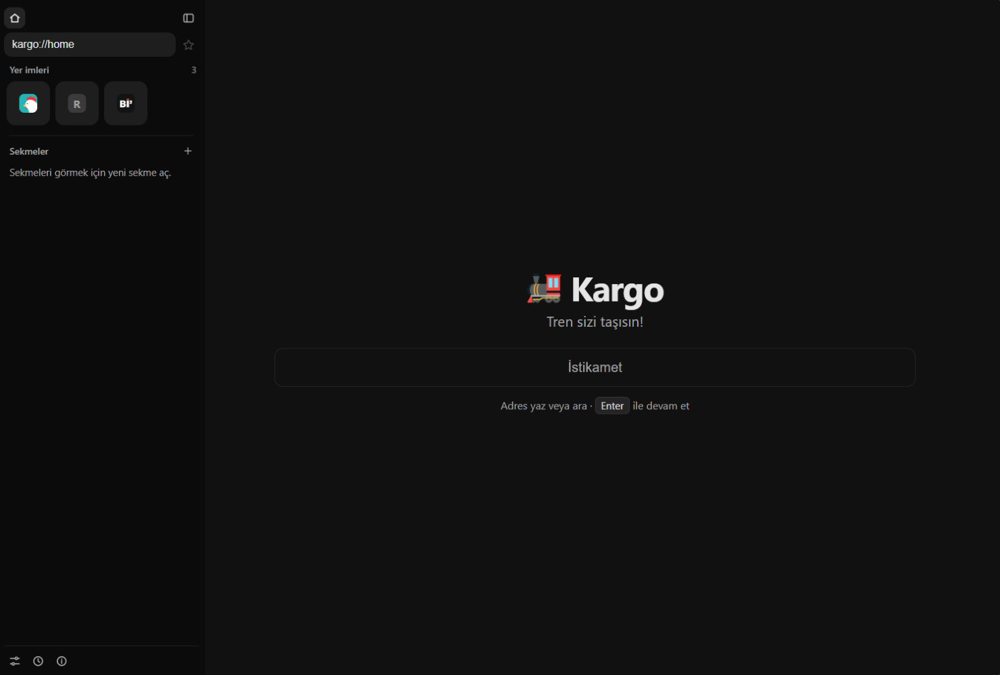

Chromium ve Electron
Kargo, web sayfalarını Electron'un webview öğesiyle Chromium üzerinde görüntüler.
Chromium tabanlı · Electron
Electron ve Chromium tabanlı, klavye odaklı sade bir masaüstü tarayıcısı.

Kargo, internette klavyeyle gezinmek ve gereksiz arayüz öğelerini azaltmak isteyenler için tasarlanmış bir tarayıcıdır. Temel tarayıcı özelliklerini klavye kısayollarıyla yönetebilir; sekmeler, arama, geçmiş ve yer imlerine hızlıca erişebilirsin.
Kargo, Chromium tabanlı Electron ile geliştirilmiştir. Kaynak koduna GitHub üzerinden ulaşılabilir.
Sadece işe yarayanlar.
Kargo, web sayfalarını Electron'un webview öğesiyle Chromium üzerinde görüntüler.
Sekmeler sol kenar çubuğunda listelenir; etkin sekmeyi buradan değiştirip yeni sekme açabilirsin.
Ctrl + K ile aramayı, son ziyaret edilen sayfaları ve geçmiş sonuçlarını aç. Geçmişi görüntüle veya temizle.
Ctrl + D ile sayfayı yer imlerine ekle veya kaldır; yer imlerini kenar çubuğunda sırala.
target="_blank" ile açılan bağlantılar ve window.open çağrıları yeni pencere yerine Kargo sekmesinde açılır. OAuth gibi gerçek pencere gerektiren akışlar güvenli bir pencerede çalışmaya devam eder.
Kes, kopyala, yapıştır ve tümünü seç işlemleri sade bir menüde toplanır.
Ayarlar sayfasından her kısayolu kendi alışkanlığına göre değiştirebilirsin.
Kargo, Chrome'un geliştirici araçlarını tam olarak destekler.
PDF dosyaları tarayıcı içinde açılır, HTML5 tam ekranı desteklenir.
Kargo tüm platformlarda iyi görünür, Windows'taki başlık çubuğu bile şık durur.
Kargo sadece çoğu insanın ihtiyaç duyduğu özelliklere sahiptir.
Kargo, web'i evinize taşır.